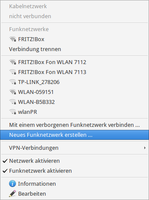
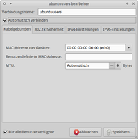
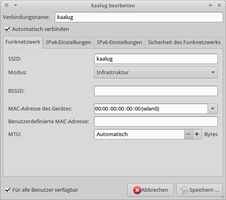
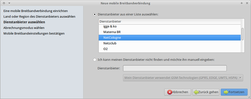
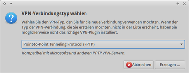
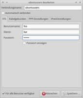

NetworkManager
Dieser Artikel wurde für die folgenden Ubuntu-Versionen getestet:
Ubuntu 16.04 Xenial Xerus
Ubuntu 14.04 Trusty Tahr
Zum Verständnis dieses Artikels sind folgende Seiten hilfreich:
Der NetworkManager (NM)  kann die Netzwerkanbindung des Computers steuern und darüber auch den Zugang zum Internet regeln. Diese weitreichenden Fähigkeiten für alle gängigen Verbindungsarten hat er seit 2011 mit Version 0.7. Der NetworkManager kann u.a.
kann die Netzwerkanbindung des Computers steuern und darüber auch den Zugang zum Internet regeln. Diese weitreichenden Fähigkeiten für alle gängigen Verbindungsarten hat er seit 2011 mit Version 0.7. Der NetworkManager kann u.a.
mit statischen IP-Adressen umgehen
DSL-Einwahlverbindungen erstellen
sich per Handy (GPRS, UMTS) ins Internet verbinden
VPN-Verbindungen verwalten
Die Funktion des NM steht je nach Konfiguration auch bei einer Drahtlosen Verbindung schon im Recovery Modus zur Verfügung. Obwohl der NetworkManager unter Ubuntu als Standardprogramm verwendet wird, gibt es mit Wicd und ConnMan zwei alternative Programme zur Verwaltung von Netzwerkverbindungen.
Installation¶
Der NetworkManager besteht aus den zwei Teilen Dienst und Oberfläche. Er ist in der Standardinstallation von Ubuntu enthalten, kann aber auch über die Pakete:
network-manager
network-manager-gnome
 mit apturl
mit apturl
Paketliste zum Kopieren:
sudo apt-get install network-manager network-manager-gnome
sudo aptitude install network-manager network-manager-gnome
für die Desktop-Umgebungen Ubuntu, Xubuntu und Lubuntu nachinstalliert werden [1].
Für den KDE-Desktop ist das Paket plasma-widget-networkmanagement zu verwenden. Bei Kubuntu 14.04 lautet das Paket plasma-nm.
Benutzung¶
|  |
| NetworkManager |
Der NetworkManager wird beim Start von (K/L/X)Ubuntu normalerweise direkt geladen und ist dann über ein Symbol in der Leiste erreichbar. Verwendet man eine eigene Desktopumgebung, so ist zu beachten, dass ein Panel mit Benachrichtigungsfeld (Systray) vorhanden sein muss. Der NetworkManager wird dann über den Befehl
nm-applet
gestartet. Bei Kubuntu 14.04 lautet der Befehl stattdessen:
kde-nm-connection-editor
Ab Kubuntu 15.04:
kde5-nm-connection-editor
Klickt man mit der  Maustaste auf das Symbol, so sieht man alle momentan verfügbaren Netzwerkverbindungen sowie die aktuell aktive Verbindung. Bei drahtlosen Netzwerken wird neben der Empfangsstärke angezeigt, ob das Netz verschlüsselt ist.
Maustaste auf das Symbol, so sieht man alle momentan verfügbaren Netzwerkverbindungen sowie die aktuell aktive Verbindung. Bei drahtlosen Netzwerken wird neben der Empfangsstärke angezeigt, ob das Netz verschlüsselt ist.
Möchte man die aktive Verbindung wechseln, klickt man einfach auf eine andere verfügbare Verbindung. Neben diesen Informationen gibt es hier die Möglichkeit, weitere Einstellungen vorzunehmen:
VPN-Verbindungen
"Connect to Hidden Wireless Network" – Hier können die Daten eines versteckten WLAN Netzes eingegeben werden. Bereits bekannte WLAN-Netze können hier ausgewählt werden, ohne die Daten erneut einzugeben.
"Neues Funknetzwerk erstellen" – Einrichtung eines neuen Funknetzwerkes.
Klickt man mit der  Maustaste auf das Symbol und dann auf den Menüpunkt "Verbindungsinformationen", so erhält man in einem neuen Fenster Details wie eigene IP-Adresse, aktive Netzwerkschnittstelle, verwendeter Treiber etc.
Maustaste auf das Symbol und dann auf den Menüpunkt "Verbindungsinformationen", so erhält man in einem neuen Fenster Details wie eigene IP-Adresse, aktive Netzwerkschnittstelle, verwendeter Treiber etc.
Verbindungen bearbeiten¶
Klickt man auf "Verbindungen bearbeiten" / "Bearbeiten" , kann man Verbindungen von Hand konfigurieren. Alternativ kann man den Verbindungs-Manager auch über das Anwendungsmenü unter "Einstellungen -> Netzwerkverbindungen" öffnen. Für jede Verbindungsart stehen grundsätzlich drei Möglichkeiten zur Verfügung:
"Hinzufügen" – legt eine neue Verbindung an
"Bearbeiten" – editieren einer existierenden Verbindung
"Löschen" – löscht eine existierende Verbindung
Weiterhin kann man für kabelgebundene, DSL-Einwahl- und WLAN-Verbindungen einen Namen eingeben sowie festlegen, ob diese Verbindung automatisch gestartet werden soll.
Die erzeugten Verbindungsprofile werden unter /etc/NetworkManager/system-connections/ gespeichert. Die Profile enthalten auch die verwendeten WLAN-Zugangsschlüssel. Bei Bedarf können die Dateien auch kopiert [3] und gesichert werden, um diese bei einer Neuinstallation des Systems nicht erneut anlegen zu müssen.
Hinweis:
Beim ersten Aufruf von "Verbindung bearbeiten" (mit Root-Rechten) sollte man dem Eintrag "Auto eth0" einen neuen (sprechenden) Namen geben und darauf achten, dass "für alle Benutzer verfügbar" aktiviert ist. Dann klappt das später automatisch mit dem PolicyKit (getestet unter Lucid Lynx 10.04.3). Als provisorische Lösung können Mitglieder der Gruppe netdev systemweite Einstellungen über den NetworkManager vornehmen.
Erst nach dem Umbenennen der "Auto eth0" wird eine entsprechende Datei unter /etc/NetworkManager/system-connections/* angelegt, die als Referenz für manuelle Änderungen dienen kann.
|  |
| Kabelgebundene Verbindungen |
Kabelgebundene Verbindung¶
Unter dem Reiter "Wired" sind alle "normalen" kabelgebundenen Netzwerkverbindungen zusammengefasst. Bearbeitet man eine bestehende Verbindung oder fügt eine neue hinzu, so findet man im Reiter "IPv4 Setting" die wichtigsten Einstellungsmöglichkeiten.
Über "Methode" legt man fest, wie die Netzwerk-Schnittstelle mit Daten für IP-Adresse, Netmask und Gateway und DNS-Server versorgt werden soll. Dabei gibt es fünf Möglichkeiten:
| Methoden | |
| Methode | Funktion |
Automatisch (DHCP) | IP-Adresse, Netmask, Gateway und DNS-Server werden von einem DHCP-Server bezogen. |
Automatisch (DHCP) nur Adressen | IP-Adresse, Netmask und Gateway werden von einem DHCP-Server bezogen. DNS-Server müssen vom Nutzer angegeben werden. |
Manuell | Alle Daten müssen vom Nutzer angegeben werden. |
Nur per Link-Local | Die Daten werden über Avahi ermittelt. Dies ermöglicht die automatische Konfiguration eines ganzen Netzwerkes ohne DHCP-Server. |
Gemeinsam mit anderen Rechnern | An dieser Netzwerkschnittstelle wird für die anderen Computer des Netzwerks per Dnsmasq ein DHCP- und ein DNS-Server zur Verfügung gestellt. IP-Adresse, Netmask und Gateway werden automatisch konfiguriert. Außerdem stellt der Computer NAT-Funktionen für das Netzwerk bereit. Auf diese Weise ist es anderen Rechnern im Netzwerk möglich, die Internetverbindung dieses Rechners zu nutzen. (Siehe Internetverbindungsfreigabe) |
|  |
| Drahtlose Verbindungen |
Drahtlose Verbindungen¶
Viele Benutzer richten das System so ein, dass man keine Zugangsdaten beim Anmelden (login) innerhalb von GDM einzugeben braucht. Dadurch wird der GNOME Schlüsselbund nicht mehr automatisch aufgesperrt, und man muss bei jedem Start des Systems den Schlüssel zum Schlüsselbund von Hand eingeben. Um dies zu umgehen, kann man entweder die Konfiguration des Schlüsselbunds verändern oder in den WLAN-Einstellungen den Punkt "Für alle Benutzer verfügbar" aktivieren (388593 ) oder das Paket libpam-keyring bzw. libpam-gnome-keyring installieren [1] (UbuntuForums: NetworkManager Always Asking Keyring Authentication ).
Achtung!
Der NetworkManager unterstützt keine deutschen Umlaute wie "Ä", "Ö", "Ü" und "ß" beim WPA/2-Passwort. Ein bereits vorhandenes WPA/2-Passwort sollte auf dem Router vorher angepasst werden, da es sonst zu keiner Verbindung kommt!
Beispiele: aus dem Passwort "Sch13ßbud3" sollte "Sch13ssbud3" gemacht werden.
Im Reiter "Wireless" findet man alle WLAN-Netzwerke, zu denen man sich schon einmal verbunden hat. Sollte man in Reichweite eines dieser WLANs sein, so wird der NetworkManager versuchen, automatisch eine Verbindung zu ihnen aufzunehmen. Sollte man dies nicht wollen, so muss man das Häkchen bei "Automatisch verbinden" in den nicht erwünschten WLAN-Verbindungen löschen.
Verbindet man sich zu einem noch unbekannten verschlüsselten Netzwerk, so werden automatisch die Zugangsdaten abgefragt und (optional) auch gespeichert, so dass sie beim nächsten Verbindungsaufbau zu diesem WLAN nicht mehr eingetragen zu werden brauchen. In den Einstellungen lassen sich nachträglich die Daten des WLAN-Routers verändern. Der Punkt "IPv4 Setting" ist identisch mit dem unter Kabelgebundene Verbindungen.
Hinweis:
Die Zugangsdaten von WLANs wie z.B. auch die WPA-Passwörter werden im Verzeichnis /etc/NetworkManager/ aufbewahrt. Vor einer Ubuntu-Neuinstallation ist es empfehlenswert, sich diese irgendwohin zu sichern, sonst sind sämtliche Zugangsdaten, die man mal hatte, unwiederbringlich futsch.
|  |
| Mobiles Breitband |
Mobiles Breitband¶
Die Verbindung ins Internet via Mobiltelefon oder UMTS-Karte ist über den Reiter "Mobiles Breitband" erreichbar. Richtet man eine neue Verbindung ein, öffnet sich ein Assistent, der die Grundeinrichtung für alle gängigen deutschen und internationalen Anbieter vornimmt.
Anschließend muss man unter "Mobiles Breitband" fehlende Angaben gegebenenfalls von Hand nachtragen. Der Punkt "IPv4 Setting" ist identisch mit dem unter Kabelgebundene Verbindungen.
Anmerkung: Wenn ein Passwort auf der SIM-Karte vorhanden ist, wird dies bei der ersten Verbindung mit dem Mobilfunknetz abgefragt.
|  |
| VPN |
VPN¶
Der NetworkManager kann auch Verbindungen zu virtuellen privaten Netzwerken aufbauen, welche beispielsweise oft in Unternehmen oder Universitäten benutzt werden, um den Netzwerkzugang nur autorisierten Benutzern zu gestatten oder um Mitarbeitern von zu Hause oder unterwegs Zugang zum internen Netzwerk zu ermöglichen.
Weitere Informationen zur Einrichtung und Nutzung sind im Artikel NetworkManager/VPN Plugins zu finden.
Es ist noch nicht möglich, mit dem NetworkManager mehrere VPN-Verbindungen gleichzeitig herzustellen (siehe Bug 753966 ).
|  |
| DSL-Einwahlverbindung |
DSL-Einwahlverbindung¶
Es gibt Internet-Anbieter, die ihren Kunden nicht den korrekten Benutzernamen in ihren Briefen mitteilen, darunter fallen beispielsweise die Angebote der Deutschen Telekom. Der Benutzername setzt sich hier immer aus verschiedenen Nummern zusammen, die im Brief mit den Zugangsdaten enthalten sind.
T-Online: Bei T-Online setzt sich der Benutzername aus Anschlusskennung, T-Online-Nummer und Mitbenutzernummer zusammen. Letztendlich muss die Kennung so
xxxxxxxxxxxxyyyyyyyyyyyy#zzzz@t-online.deaussehen. Die einzelnen Zeichen stehen hier fürx = T-Online-Anschlusskennung 12-stellig
y = T-Online-Nummer meist 12-stellig
z = Mitbenutzer meist 0001
Das Zeichen # zwischen T-Online-Nummer und Mitbenutzernummer wird nur benötigt, falls die T-Online-Nummer weniger als zwölf Stellen hat, stört aber nicht, wenn man es trotz zwölfstelliger T-Online-Nummer eingibt.
T-DSL Business: Laut Mitteilung des Anbieters ist der Loginname z.B.
012450025364, korrekt ist abert-online-com/012450025364@t-online-com.de
Im Reiter "DSL" kann man DSL-Einwahlverbindungen verwalten. Richtet man eine neue Verbindung ein, so müssen in der Karte "DSL" die entsprechenden Zugangsdaten eingetragen werden. Das Feld "Dienst" kann in den meisten Fällen frei gelassen werden. Sollte die Einwahl nach der Einrichtung des Zugangs trotz richtigen Passworts nicht funktionieren, kann ein Neustart des Systems weiterhelfen.
Problembehebung¶
Netzwerkgeräte werden nicht gefunden¶
Der NetworkManager verwaltet nur Netzwerkgeräte, die noch nicht über die Konfigurationsdatei /etc/network/interfaces bereits manuell eingerichtet wurden. Sollte der NetworkManager ein Gerät also nicht finden, so muss diese Datei überprüft werden und eventuell bereits bestehende Konfigurationen aus ihr entfernt werden.
Neuartige USB-Modems werden ggf. nur als Laufwerk erkannt und dadurch nicht im NetworkManager gelistet, mit lsusb [2] aber schon. Dann müssen sie erst per USB ModeSwitch als Netzwerk-Gerät ansprechbar gemacht werden.
Drahtlose Verbindung schlägt fehl¶
Wenn die drahtlose Verbindung mit WPA/2-Verschlüsselung fehlschlägt, kann es am wpasupplicant liegen. Das Problem kann gelöst werden, indem die neueste Version von "wpasupplicant" aus den Debian-Quellen installiert wird: Download 
NetworkManager nicht mehr im Panel¶
Im Forum erscheinen immer wieder Benutzer, bei denen der NetworkManager nicht mehr im Panel der Desktopumgebung erscheint. Dieses Problem lässt sich meist sehr einfach lösen.
Benachrichtigungsfeld¶
Der NetworkManager besitzt keinen Starteintrag im Anwendungsmenü der Desktopumgebungen, er erscheint nur als kleines Icon im sogenannten "Benachrichtigungsfeld"-Applet im Panel von GNOME. Löscht man dieses Applet aus Versehen, so findet man natürlich auch den NetworkManager nicht mehr. Man muss das "Benachrichtigungsfeld"-Applet wieder zum Panel hinzufügen. Weitere Informationen hierzu findet man im Artikel GNOME Panel in Wiki.
Eine Möglichkeit wäre zum Beispiel, dass der NetworkManager zwar im Panel steht, aber durch einen unsichtbaren Strich dargestellt wird.
In einem solchen Fall kommt bei der Eingabe [2] von nm-applet folgende Meldung:
Eine Instanz von nm-applet läuft bereits. ** (nm-applet:23860): WARNING **: <WARN> constructor(): Couldn't initialize the D-Bus manager.
Um das Applet wieder zum Erscheinen zu bringen, erstellt man einen Starter mit "nm-applet" und klickt mehrmals darauf, um zu sehen, wo kurzzeitig im Panel ein Strich aufblinkt. Wenn man anschließend auf die Stelle klickt, erscheint das Menü zum NetworkManager. Nun muss man bei "Netzwerk aktivieren" das Häkchen entfernen und wieder einsetzen, damit das Symbol wieder erscheint.
Sitzung¶
Ein andere Fehlerquelle ist die Möglichkeit, dass der NetworkManager beim Anmelden (login) erst gar nicht mehr gestartet wird. Das Laden von Programmen nach dem Anmelden übernimmt bei GNOME die Sitzungsverwaltung. Hier muss ein Haken bei "Network Manager / Network Manager applet" gesetzt sein, sonst wird der NetworkManager nicht geladen und erscheint natürlich auch nicht im Panel. Weitere Informationen hierzu findet man im Artikel Sitzungsverwaltung hier im Wiki.
Hinweis:
Von diesem Problem war insbesondere Lubuntu 14.04 betroffen. Der Blogbeitrag Fix Lubuntu 14.04 Network Manager Missing From The Panel erklärt, wie man Abhilfe schafft. Mit 14.04.1 ist das Problem behoben worden.
Verbindungsproblem mit Medion Mobile Stick von ALDI (aka Huawei E220)¶
Wenn eine Verbindung nicht möglich ist, obwohl der Stick vom NetworkManager erkannt wird, schafft das Deaktivieren der PIN (am einfachsten: SIM-Karte in Handy einlegen und dann PIN deaktivieren) rasche Abhilfe. Weitere Informationen kann man diesen Thread  aus dem ubuntu-austria.at Forum entnehmen.
aus dem ubuntu-austria.at Forum entnehmen.
Modem Huawei E220 wird nicht erkannt¶
Das UMTS-Modem Huawei E220 hat zusätzlich zum eigentlichen Modem eine "USB-CD" mit der Software für Windows. Unter Ubuntu 10.04 kann es damit zu Problemen kommen, weil ständig versucht wird, diese "USB-CD" zu öffnen. Wird also z.B. im Netzwerk-Manager das Modem nicht angezeigt (oder es taucht nur kurz auf und verschwindet wieder), dann könnte dieser Artikel im Forum bei der Diagnose helfen bzw. Abhilfe schaffen.
Netzwerkverwaltung deaktiviert¶
Unter Lucid Lynx gibt es das Problem, dass nach einer System-Aktualisierung ("update") keine Verbindungen mit dem NetworkManager möglich sind. Dies liegt an einem fehlerhaften Wert in der Datei /var/lib/NetworkManager/NetworkManager.state. Diese muss mit einem Editor [4] mit Root-Rechten [3] bearbeitet werden. Der Wert
NetworkingEnabled=false
muss auf
NetworkingEnabled=true
gesetzt werden. Anschließend muss der Dienst neu gestartet werden. Dies geschieht über den Befehl
sudo service network-manager restart
Gerät wird nicht verwaltet¶
Der NetworkManager zeigt zu Verbindungen wie etwa Kabel- oder Funknetzwerk nur an: "Gerät wird nicht verwaltet". Das kommt z.B. vor, wenn man Xubuntu über ein PXE-Netzwerk installiert. Zur Aktivierung muss nach /etc/network/interfaces vorgegangen werden.
Nach einem Update auf Ubuntu 16.10 ( NetworkManager 1.2.4 ) werden alle nicht-Wifi bzw. Wwan-Geräte, also z. B. eine Netzwerkkarte nicht mehr automatisch vom Netzwerkmanager verwaltet. Es handelt sich hier um den Launchpad-Bug 1638842. Im Kommentar #6 wird eine Lösung aufgezeigt. Die Einstellungen sind Systemweit in der /usr/lib/NetworkManager/conf.d/10-globally-managed-devices.conf vorgegeben. Durch das Erzeugen einer leeren Datei
touch /etc/NetworkManager/conf.d/10-globally-managed-devices.conf
werden diese Voreinstellungen überschrieben. Ein Neustart des Netzwerk-Managers beseitigt dann das Problem und man kann wie gewohnt die LAN-Schnittstelle verwalten:
sudo service network-manager restart
Nach Ruhezustand/sleep keine Netzwerkverbindung mehr¶
Es kann vorkommen, dass nach dem Aufwachen des Computers die Netzwerkverbindung nicht mehr funktioniert. Mit
sudo killall NetworkManager
wird der Networkmanager beendet und startet sich dann automatisch wieder neu. Falls er nicht startet, kann dies manuell erfolgen:
sudo NetworkManager
Danach wird auch die Netzwerkverbindung wiederhergestellt. Quelle: Post im Support-Forum. Bug auf Launchpad: 1130571
Weiterführende Informationen¶
Dispatcher¶
Der NetworkManager kann mehr als nur eine Verbindung auf- und wieder abbauen. Der NetworkManager kann bei Verbindungsauf- und -abbau Skripte ausführen. Diese Funktionen sind jedoch nicht von der grafischen Oberfläche aus erreichbar. Dies macht der NetworkManager über die sogenannten Dispatcher-Skripte, die ausgeführt werden, wenn der NetworkManager eine Aktion durchführt, z.B. wenn er sich zu einem WLAN verbindet oder davon trennt. (mehr)
Konfigurationsdateien¶
Die abgespeicherte Konfiguration der mobilen Breitbandverbindungen (UMTS) befindet sich in dem versteckten Ordner ~/.gconf/system/networking/connections, wobei ~ das eigene Homeverzeichnis darstellt. Zur Navigation durch und teilweise auch der Bearbeitung der XML-Dateien eignet sich auch der grafische gconf-editor, welcher sich auf der Konsole [2] aufrufen lässt. Zur automatischen Verarbeitung (Löschen, Kopieren, Verändern...) eignet sich des Weiteren das gconftool und der Nachfolger gconftool-2 (siehe die Manpage zu gconftool-2).
/etc/network/interfaces¶
Man kann auch die interfaces-Datei vom NetworkManager verwalten lassen. Dazu muss manuell die Datei /etc/NetworkManager/nm-system-settings.conf, ab Natty Narwhal /etc/NetworkManager/NetworkManager.conf, mit Root-Rechten [3] in einem Editor [4] bearbeitet werden. Im Abschnitt [ifupdown] soll der Wert für managed=true sein:
[main]
plugins=ifupdown,keyfile
[ifupdown]
managed=trueAnschließend muss der Dienst neu gestartet werden. Dies geschieht über den Befehl
sudo service network-manager restart
NetworkManager ohne grafische Oberfläche¶
Der Netzwerkmanager kann auch ohne GUI – also nur mit dem Paket network-manager – verwendet werden. Eine derartige Verwendung ist vor allem für Server sinnvoll. Für weitere Informationen siehe unter NetworkManager ohne GUI.
Links¶
Howto/NetworkManager absichern - Howto zum Absichern des NetworkManagers mit Hilfe von PolicyKit
NetworkManager Hardware 3G
– unterstützte UMTS-Hardware
- Erstellt mit Inyoka
-
 2004 – 2017 ubuntuusers.de • Einige Rechte vorbehalten
2004 – 2017 ubuntuusers.de • Einige Rechte vorbehalten
Lizenz • Kontakt • Datenschutz • Impressum • Serverstatus -
Serverhousing gespendet von